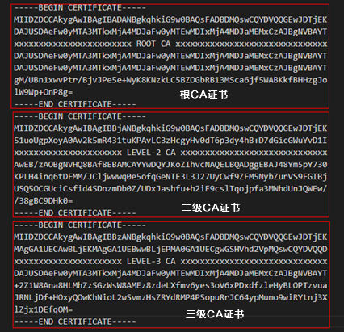

当CA证书不是根CA证书时，导入的CA证书必须是一个完整的证书链文件。本文介绍如何制作证书链文件。
操作步骤
- 在本地新建一个空白的文本文档，如certificate.txt。
- 按根证书、二级证书、三级证书...的顺序依次打开证书文件，并依次复制证书文件内容（从“-----BEGIN CERTIFICATE-----”到“-----END CERTIFICATE-----”）到新建的文本文档中。
下图以设备证书为三级CA证书的为例，完整的证书链内容示例如下。

- 保存文件，修改后缀名称为pem。